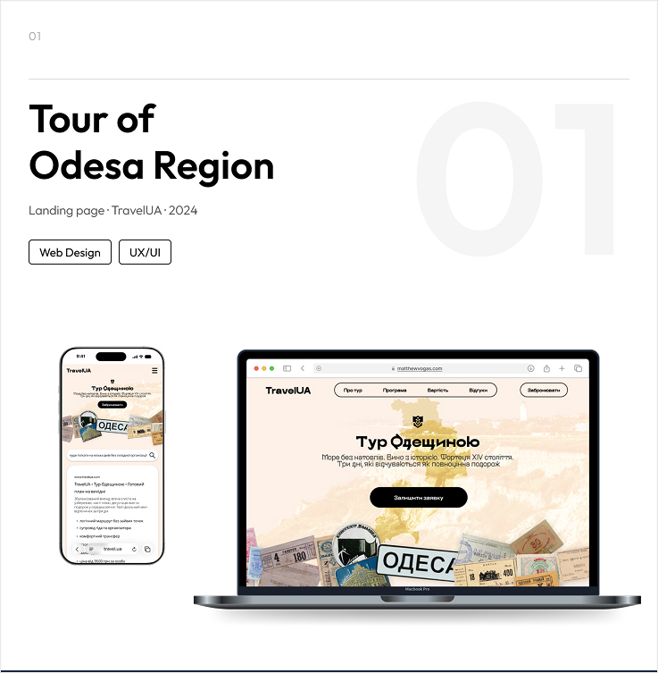
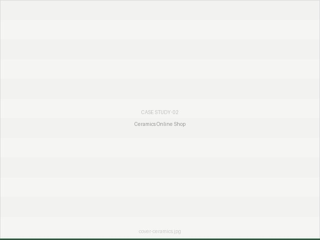

01
TOUR OF ODESA REGION
My first learning project. A website for a tourist tour — here I learned to feel design, work with composition and typography without a strict system.
VIEW MORE →

02
CERAMICS ONLINE SHOP
My second learning project — a full UX/UI workflow including design system, prototypes, user flow and personas. Demonstrates the difference between an amateur and a structured design approach.
VIEW MORE →